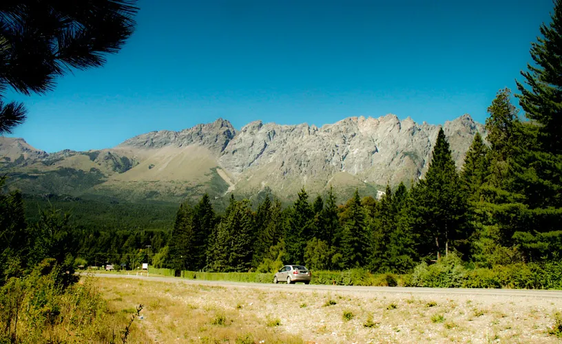

Cerro Piltriquitrón
Es uno de los principales atractivos naturales de la zona, conocido por sus paisajes montañosos.
El Cerro Piltriquitrón se encuentra cerca de Ribera Azul, en Río Negro, y forma parte del paisaje característico de la localidad. Sus bosques y vistas panorámicas permiten apreciar la combinación de la ciudad, el valle cordillerano y las montañas. En sus alrededores se pueden recorrer senderos, observar el paisaje, sacar fotografías y disfrutar de actividades de montaña al aire libre.